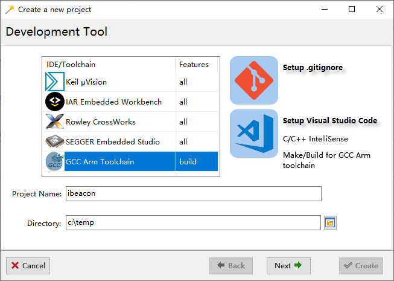

INGChips 为客户提供易用的 SDK，帮助客户便捷、高效地开发蓝牙产品。

本教材演示如何通过 INGChips SDK 开发 iBeacon 设备和 iBeacon 扫描器。iBeacon 由
苹果公司开发，2013 年发布。利用 iBeacon 可以进行室内精准导航、定位，精准消息推送等，用途广泛。
iBeacon 设备
着手开发之前，先从 App Store 下载一个 iBeacon app，比如 Locate。 Locate 预置了
一系列 UUID，其中有一个全 0 的^[按协议规定，
最终产品中 UUID 不得全部为 0。]。下面我们就开发一个 UUID 全为 0 的 iBeacon 设备。
设置广播数据
iBeacon 广播数据包里包含两个项目：
-
Flags
值固定为
0x06，也即置起了两个比特，LE General Discoverable Mode & BR/EDR Not Supported。 -
Manufacturer Specific Data
该项里的数据如下表所示。
| Size in Bytes | Name | Value | Notes |
|---|---|---|---|
| 2 | Company ID | 0x004C | 苹果公司 ID |
| 2 | Beacon Type | 0x1502 | 苹果定义的固定值 |
| 16 | Proximity UUID | 用户自定义的 UUID | |
| 2 | Major | 可理解使用在同一 UUID 下的组 ID | |
| 2 | Minor | 可理解为该设备在组内的 ID | |
| 1 | Measured Power | dBm | iPhone 5s 在距离设备 1m 测得的接收信号强度 |
开发 iBeacon 设备的方法与上一教程完成相同，整个开发过程不需要写一行代码，
唯一的区别就在于按规范进行设置广播数据。INGChips SDK 全面支持
Keil、IAR、SEGGER 集成开发环境及 GNU Arm Toolchain。让我们来试试 GNU Arm Toolchain。

用广播数据编辑器填加 0x01 - «Flags» 和 0xFF - «Manufacturer Specific Data» 两项。
点击 0x01 - «Flags»，勾选 LE General Discoverable Mode 和 BR/EDR Not Supported。

点击 0xFF - «Manufacturer Specific Data», 然后点击 Edit as 按钮从弹出的快捷菜单里选择
iBeacon ... 打开 iBeacon 数据编辑器。

UUID 全填为0，1m 处的信号功率可随意填写一个合理值，如 -50dBm，稍候我们将利用 Locate app 校准信号功率。
试一试
完成项目向导里的其它各步骤一个可用 GNU Arm Toolchain 编译的项目就创建好了。
点击 iBeacon 项目打开控制台，输出 make 命令编译项目。
回到 ingWizard，使用跟上一教程中相同的步骤下载程序。打开 Locate app 就能看到我们开发的
iBeacon 设备了。

点选 iBeacon 设备，可以校准信号功率，也可以实时查看距离。

信号功率校准后，回到 ingWizard，在项目上右键点击，选择 Edit Data -> Advertising
菜单调出广播数据编辑器，修改信号功率。在控制台输入 make rebuild 命令重新编译项目。
重新下载程序，可以发现 Locate app 里显示的距离精确了一些。
说明：按照规范，iBeacon 设备要使用不可连接非定向（non connectable undirected）广播包以 100ms 为周期发送 信标信号。本教程不碰代码，广播采用默认参数发送。
iBeacon 扫描器
接下来再开发一个 iBeacon 扫描器。温馨提醒：要写代码了。
像往常一样，在 ingWizard 里创建项目，这次试试 IAR Embedded Workbench。
Role of Your Device 页里将设备角色设定成 Central，然后一路 Next 下去，iscanner 项目
就创建好了。

打开项目，在 profile.c 里找到函数 user_packet_handler，可以看到一个
名为 GAP_EVENT_ADVERTISING_REPORT 的广播报告事件。每次扫描到广播时就会收到这个事件:
case GAP_EVENT_ADVERTISING_REPORT:
gap_get_advertisingReport(&report, packet);
// add your code
......
break;
收到广播报告后需要检查是否是合法的 iBeacon 广播。基于上一教程的讨论，iBeacon 的数据结构可以 很直接地写出来：
typedef __packed struct ibeacon_adv
{
uint16_t apple_id;
uint16_t id;
uint8_t uuid[16];
uint16_t major;
uint16_t minor;
int8_t ref_power;
} ibeacon_adv_t;
#define APPLE_COMPANY_ID 0x004C
#define IBEACON_ID 0x1502
扩展关键字 __packed 表示结构体内的各个域以 1 字节，ARM 和 IAR 的编译器皆支持。 如果是用 SEGGER 或者
GNU Arm Toolchain，可以使用 #pragma pack 指令，或者 __attribute__ ((packed)) 属性：
#pragma pack (push, 1)
typedef struct ibeacon_adv
{
...
} ibeacon_adv_t;
#pragma pack (pop)
先编写打印 UUID 的辅助函数热热身：
const char *format_uuid(char *buffer, uint8_t *uuid)
{
sprintf(buffer, "{ %02X%02X%02X%02X-%02X%02X-%02X%02X-"
"%02X%02X-%02X%02X%02X%02X%02X%02X }",
uuid[0], uuid[1], uuid[2], uuid[3],
uuid[4], uuid[5], uuid[6], uuid[7], uuid[8], uuid[9],
uuid[10], uuid[11], uuid[12], uuid[13], uuid[14], uuid[15]);
return buffer;
}
距离估计
电磁波在自由空间中传输的损耗公式为：
\[Loss = 32.45 + 20log(d) + 20log(f)\]这里到辐射源的距离 $d$ 以 km 为单位，频率 $f$ 以 MHz 为单位，计算出的损耗 $Loss$ 用 dB 表示。
广播报告里包含接收信号强度指示 (RSSI)。假设开发板得到的 RSSI 跟 iPhone 5s 一致，
利用 RSSI 和 iBeacon 广播里携带的 ref_power, 根据
损耗公式可直接估计距离如下：
double estimate_distance(int8_t ref_power, int8_t rssi)
{
return pow(10, (ref_power - rssi) / 20.0);
}
iBeacon 扫描器的完整代码如下：
uint8_t length;
ibeacon_adv_t *p_ibeacon;
char str_buffer[80];
......
case GAP_EVENT_ADVERTISING_REPORT:
gap_get_advertisingReport(&report, packet);
// 提取 Manufacturer Specific Data
p_ibeacon = (ibeacon_adv_t *)ad_data_from_type(report.length,
(uint8_t *)report.data, 0xff, &length);
// 判断是否为 iBeacon
if ((length != sizeof(ibeacon_adv_t))
|| (p_ibeacon->apple_id != APPLE_COMPANY_ID)
|| (p_ibeacon->id != IBEACON_ID))
break;
// 计算并打输出
printf("%s %04X,%04X, %.1fm\n",
format_uuid(str_buffer, p_ibeacon->uuid),
p_ibeacon->major, p_ibeacon->minor,
estimate_distance(p_ibeacon->ref_power, report.rssi));
break;
按下 F7 编译，然后下载。利用 Locate app 或者用另一块开发板发送 iBeacon 信号，iBeacon 扫描器立即就能扫描到：